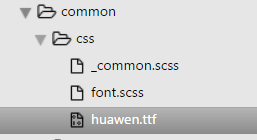

1、UI设计图有"华文黑体"，担心客户端没有该字体，将"huawen.ttf"字体文件，放入项目中：

2、创建一个font.scss（或font.css）文件：
1 @font-face {
2 font-family: 'huawen'; //重命名字体名
3 src: url('huawen.ttf'); //引入字体
4 font-weight: normal;
5 font-style: normal;
6 }3、在main.js中引入
import '@/common/css/font.scss';4、就可以直接使用了：
div {
font-family: 'huawen';
}